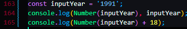

Value Types
Type concersion is manually converting one type to another

this function doesn't change the original variable.


NaN stands for not a number


this means that NaN is an invalid number


JavaScript can only convert three types, to number, to string, & to boolean, we can't convert to undefined or NULL
Type coersion is automic

number and string together, they'll all became strings

the minus sign automatically trigers the coersion